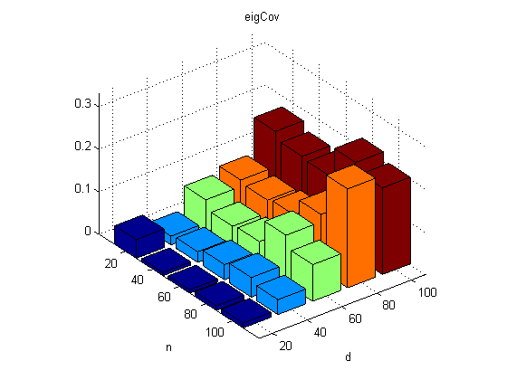
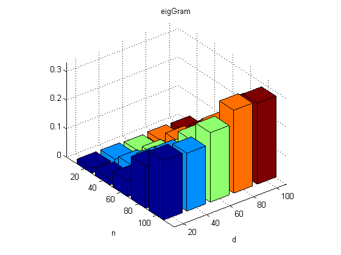
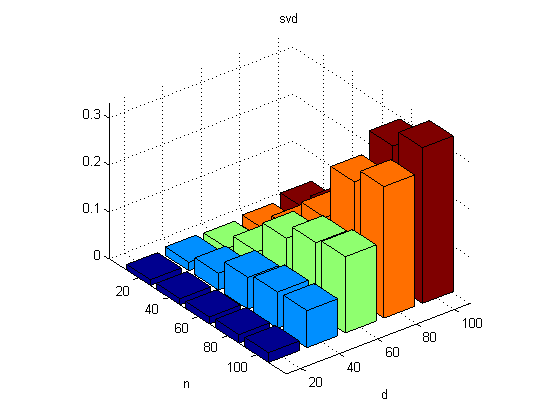

Time various pca methods w.r.t. n and d
setSeed(0);
Ns = 20:20:100;
Ds = 20:20:100;
K = 5;
nNs = length(Ns);
nDs = length(Ds);
ntrials = 10;
methodNames = {'eigCov', 'eigGram', 'svd'};
nmethods = length(methodNames);
tim = zeros(nNs, nDs, nmethods);
for ni=1:length(Ns)
N = Ns(ni);
for di=1:length(Ds)
D = Ds(di);
X = rand(N,D);
for method=1:nmethods
tic
for trials=1:ntrials
[B{method}, Xproj{method}, evals{method}, Xrecon{method}, mu{method}] = ...
pcaPmtk(X, K, method);
end
tim(ni, di, method) = toc;
switch method
case 1, predicted(ni, di, 1) = D^3;
case 2, predicted(ni, di, 2) = N*D^2;
case 3, predicted(ni, di, 3) = min(N*D^2, D*N^2);
otherwise, error('bad method');
end
[junk, predictedBestMethod(ni,di)] = min(predicted(ni,di,:));
[junk, actualBestMethod(ni,di)] = min(tim(ni,di,:));
r = min(N,D);
if method > 1
assert(approxeq(abs(B{method}), abs(B{method-1})))
assert(approxeq(abs(Xproj{method}), abs(Xproj{method-1})))
assert(approxeq(abs(Xrecon{method}), abs(Xrecon{method-1})))
assert(approxeq(abs(evals{method}(1:r)), abs(evals{method-1}(1:r))));
end
end
end
end
predictedBestMethod
actualBestMethod
m = max(tim(:));
for method=1:nmethods
figure(method);clf
bar3(tim(:,:,method));
set(gca, 'zlim', [0 m])
xlabel('d'); set(gca, 'xticklabel', Ds); ylabel('n'); set(gca,'yticklabel',Ns)
title(methodNames{method})
fname = sprintf('pcaKPMtestMethod%d.eps', method);
printPmtkFigure(fname);
end
predictedBestMethod =
1 3 3 3 3
1 1 3 3 3
1 1 1 3 3
1 1 1 1 3
1 1 1 1 1
actualBestMethod =
3 3 2 2 2
1 1 1 2 2
1 1 1 1 3
1 1 1 1 1
1 1 1 1 1
  